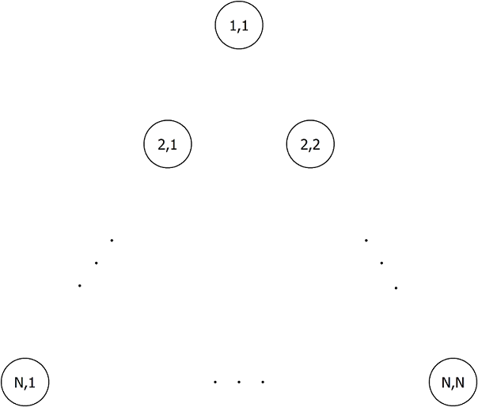
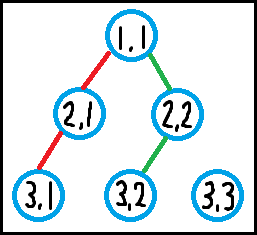

有 $\dbinom N2$ 个点排成一个边长为 $N$ 的等边三角形，如下图所示。具体地，我们用 $\left( i, j \right)$ 表示第 $i$ 行的第 $j$ 个点。
易知，$\left( i, j \right)$ 左下方和右下方的点分别记作 $\left( i + 1, j \right)$ 和 $\left( i + 1, j + 1 \right)$。
现在需要在这些点之间画 $M$ 条折线，每条折线从 $\left( 1, 1 \right)$ 开始，向下走 $N - 1$ 次后到达点 $\left( N, x \right)$。形式化地，对于每条折线，存在 $N$ 个正整数 $1 = X_{i, 1}, X_{i, 2}, \cdots, X_{i, N}$ 满足：
对于 $\forall 1 \leq j \leq N - 1$，$X_{i, j + 1} \in \left\{ X_{i, j}, X_{i, j} + 1 \right\}$。
$L_i$ 为依次连接点 $\left( 1, X_{i, 1} \right), \left( 2, X_{i, 2} \right), \cdots, \left( N, X_{i, N} \right)$ 的折线。
特别地，你还需要保证 $L_{i + 1}$ 没有任何一部分严格位于 $L_i$ 左侧。形式化地，对于 $\forall 1 \leq j \leq N$，均有 $X_{1, j} \leq X_{2, j} \leq \cdots \leq X_{M, j}$。
此外，你还有 $K$ 个额外的限制条件，第 $i$ 个条件用 $\left( A_i, B_i, C_i \right)$ ($C_i \in \left\{ 0, 1 \right\}$)，表示 $X_{A_i, B_i + 1} = X_{A_i, B_i} + C_i$ 必须成立。
求在上面所有的条件下，一共有多少种画 ($M$ 条) 折线的方法。
第一行包含三个非负整数 $N, M, K$ ($1 \leq N, M \leq 20; 0 \leq K \leq \left( N - 1 \right) M$)，分别表示点阵的大小，折线的个数和额外的限制条件的个数。
接下来 $K$ 行，每行三个非负整数 $A_i, B_i, C_i$ ($1 \leq A_i \leq M; 1 \leq B_i \leq N - 1; C_i \in \left\{ 0, 1 \right\}$)，描述一组额外的限制条件。保证一个有序对 $\left( A_i, B_i \right)$ 至多出现一次。
输出一行一个整数，表示满足所有约束条件的 $M$ 元折线组的数量模 $10^9 + 7$ 的值。
容易想到用一个 $N - 1$ 位二进制数去表示一条折线。具体地，若 $X_{i, j + 1} = X_{i, j}$，则对应的第 $j$ 位为 $0$；若 $X_{i, j + 1} = X_{i, j} + 1$，则对应的第 $j$ 位为 $1$。
这里，为了更加符合直觉，我们用高位表示折线上方的部分，低位表示折线下方的部分。
如，上图中的两条路径就表示为 $\left[ \color {red} {00}, \color {green} {10} \right]$ (高位到低位)。
我们考虑题目中的条件到二进制数中转化成了什么。
设左边的折线为 $\left( l_0 l_1 l_2 \cdots l_{n-1} \right)_2$ ($n = N - 1$)，右边的折线为 $\left( r_0 r_1 r_2 \cdots r_{n-1} \right)_2$，则左边的折线位于右边的折线的左侧，当且仅当对于 $\forall 0 \leq k \leq n - 1$，有 $\displaystyle \sum_{i=0}^k l_i \leq \sum_{i=0}^k r_i$。
于是，我们对两个二进制数 $l = \left( l_0 l_1 l_2 \cdots l_{n-1} \right)_2, r = \left( r_0 r_1 r_2 \cdots r_{n-1} \right)_2$，定义 $l \preceq r$，如果它们满足上面的绿色条件。
而对于某些额外的限制条件，就相当于限制某条折线的第 $i$ 位必须是 $0$ (或 $1$)。
于是我们就有一个最朴素的 DP 了：
设 $f_{i, j}$ 表示只考虑前 $i$ 条折线，且第 $i$ 条折线为 $j$ 的方案数。易知边界状态为 $f_{0, 0} = 1$，答案为 $\sum\limits_j f_{M, j}$。
至于转移，我们只需枚举第 $i - 1$ 条折线的状态 $k$，并满足 $k \preceq j$ 即可。转移方程即为 $$ f_{i, j} = \left[ j \text{ 满足额外的限制条件} \right] \cdot \sum_{k \preceq j} f_{i-1, k} \tag 1 \label 1 $$
注意到我们这个过程需要枚举所有满足 $k \preceq j$ 的 $k$。而暴力枚举的话，总时间复杂度就变成了 $O \left( 4^N \cdot N \cdot M \right)$ (或 $O \left( 4^N \cdot M \right)$)，无法接受，因此我们需要考虑更加快速的方法。
考虑 $\eqref 1$ 式的转移，它实际上可以分为两部分：
定义临时数组 $\left\{ g_n \right\}$，然后对于每个 $f_{i - 1, j}$，转移到所有满足 $j \preceq r$ 的 $g_r$ (即对于 $j \preceq r$，执行 $g_r \gets_+ f_{i - 1, j}$。
对于所有的 $j$，若 $j$ 满足关于 $i$ 的额外的限制条件，则令 $f_{i, j} \gets g_j$；否则令 $f_{i, j} = 0$。
注意到步骤 2. 在经过合适的位运算优化后可以达到 $O \left( 2^N \cdot M \right)$，因此下面只需要考虑如何快速处理步骤 1。
显然对于单个 $i$，运行时间的下界就是 $O \left( 2^N \right)$。下面我们给出一个 $O \left( 2^N \cdot N \right)$ 的算法。
和这道题类似，考虑整个转移过程，如果我们将所有满足 $i \prec j$ ($i \preceq j \wedge i \neq j$) 的有序对 $\left( i, j \right)$ 之间连一条由 $i$ 指向 $j$ 的有向边，则得到的图是个 DAG，于是转移就是在这张图上进行。
但注意这里有一个问题：对于点 $i, j$，可能 $i \to j$ 之间存在多条简单路径 (如 $0101 \to 0110 \to 1001$ 和 $0101 \to 1001 \to 1010$)，但是实际更新的系数却仍然为 $1$，而不是路径条数。
于是，我们需要找到一个合适的更新顺序，使得对于一切满足 $i \preceq j$ 的 $\left( i, j \right)$ 对，$i \leadsto j$ 恰好被更新到 $1$ 遍。
首先，我们从 popcount 来入手。由定义可知，若 $i \preceq j$，显然由 $\operatorname{popc} \left( i \right) \leq \operatorname{popc} \left( j \right)$ (这还只是一个必要条件)，于是，我们根据这些数的 $\operatorname{popc}$ (实质就是向右走的次数)，将所有的二进制数 (折线) 分为 $n + 1$ 个 "层"。
我们用 $next_k \left( i \right)$ ($k \geq \operatorname{popc} \left( i \right)$) 表示满足 $\operatorname{popc} \left( i' \right) = k$ 且 $i' > i$ 的最小二进制数 $i'$。容易证明，$next_k \left( i \right)$ 就是将 $i$ 的二进制表示下末 $k - \operatorname{popc} \left( i \right)$ 个 $0$ 替换成 $1$ 的结果。
现在，设 $\operatorname{popc} \left( i \right) = I, \operatorname{popc} \left( j \right) = J$。则，若 $i \preceq j$，则必有 $next_J \left( i \right) \preceq j$。证明不难，就留给读者了。
于是，我们第一轮可以连接所有形如 $i \to next_{\operatorname{popc} \left( i \right) + 1} \left( i \right)$ 的边，然后按照拓扑序更新一次，就完成了 popcount 值不同的 $i$ 之间的转移。
因此接下来只需考虑对于每个 $k$，所有满足 $\operatorname{popc} \left( i \right) = k$ 的 $i$ 内部之间的转移了。
考虑 $\operatorname{popc} \left( i \right) = \operatorname{popc} \left( j \right) = k$ 且有 $i \preceq j$。因此，由偏序关系可知，$i$ 的每一个 $1$ 的位置都应在 $j$ 的对应 $1$ 位置的右侧 (低位侧)。
于是，我们将这些 $1$ 看成棋子，则整个过程其实就相当于若干次将某个棋子左移一位的操作，并保证任意时刻两个棋子不能占据同一位置 (有点类似 [soj678]Namori 的过程)。
因此我们只需保证，对于任意一个起始状态和终止状态，规定唯一的转移路线即可。
就像前面指出的，$0101 \to 0110 \to 1001$ 和 $0101 \to 1001 \to 1010$，需要选择一个作为标准。
事实上，我们可以归纳着定义操作过程：
对于起始状态 $i$ 和目标状态 $j$，考虑 $i$ 移一个棋子能到达的状态 $i_1, i_2, \cdots, i_l$，这里按照移动的棋子的位置从右往左给出，即先考虑最右侧的棋子能否移动，然后考虑次右侧，最后考虑最左侧。
设 $\gamma$ 是最小的满足 $i_\gamma \preceq j$ 的整数，则规定 $i \leadsto j$ 的路径为 $i \to i_\gamma \leadsto j$。
于是，对于 $i \leadsto j$，设它的标准路线为 $i \to i_1 \to i_2 \to \cdots \to i_k \to j$，那么它应该满足如下性质：
对于边 $u \to v$，定义它的层次为整数 $k$，表示 $v$ 为将 $u$ 的右 (低位) 起第 $k$ 个可移动的棋子 ($1$) 左移一格的结果。
如：$\left( 0011 \right) \to \left( 0101 \right)$ 的层次为 $1$，$\left( 0101 \right) \to \left( 0110 \right)$ 的层次为 $1$，而边 $\left( 0101 \right) \to \left( 1001 \right)$ 的层次是 $2$。
那么，标准路线满足：它是所有 $i \leadsto j$ 的路径中，唯一一条层次单调递增的路径。
先证明它的各边层次是单调递增的。
反之，设对于路径的一部分，有 $u \to v \to w$，且 $u \to v$ 的层次 $l_1$ 大于 $v \to w$ 的层次 $l_2$。
那么，考虑 $v$ 的时候第 $l_2$ 个可移动的棋子，在 $u$ 的时候也能移动，而我们却选择了第 $l_1 > l_2$ 个棋子，与定义矛盾。
再证明它是唯一满足层次单调递增的路径。
反之，设还有另一条路径 $i \to g \leadsto j$ 也满足条件。由最小性可不妨假设 $i_1 \neq g$。
设 $i \to i_1$ 的层次为 $l_1$，$i \to g$ 的层次为 $l_2$。由定义，$l_2 > l_1$。
那么，根据递增性，在第一步以后，第 $l_1$ 个可移动的棋子 (记为 $\delta$) 及其之右的棋子均无法移动。
然而由 $i \to i_1$ 知，最终状态下棋子 $\delta$ 会在原位置的左边，即它至少需要移动一格。
这与刚才我们得出的结论 $\delta$ 无法移动相矛盾，所以唯一性得证。
因此，只需要按照层次从小到大依次更新 (分层图的思想)，就能保证每一对满足 $i \leadsto j$ 的 $\left( i, j \right)$ 恰好更新一遍。
而整张图的边数的一个显然上界是 $O \left( 2^n \cdot n \right)$，而事实上总边数就是 $2^{n-2} \cdot \left( n - 1 \right)$，于是整个问题的时间复杂度就是 $O \left( 2^N \cdot N M \right)$。
#include <bits/stdc++.h>
#define ctz __builtin_ctz
#define EB emplace_back
typedef std::pair <int, int> pr;
typedef std::vector <pr> vector;
const int N = 24, N2 = 524354, mod = 1000000007;
int L, n, q, ALL;
int mask0[N], mask1[N], f[N2];
vector mdf[N];
inline void add(int &x, const int y) {x += y - mod, x += x >> 31 & mod;}
int main() {
int i, j, c, S;
scanf("%d%d%d", &L, &n, &q), ALL = ~(-1 << --L);
for (; q; --q) scanf("%d%d%d", &i, &j, &c), (c ? mask1 : mask0)[--i] |= 1 << (L - j);
for (i = 0; i <= ALL; ++i)
for (c = 0, S = i & ((ALL & ~i) >> 1); S; S &= S - 1, ++c)
mdf[c].EB(i, i ^ ((S & -S) * 3));
for (*f = 1, i = 0; i < n; ++i) {
for (j = 0; j < ALL; ++j) add(f[j | (j + 1)], f[j]);
for (c = 0; c < L; ++c) for (const pr e : mdf[c]) add(f[e.second], f[e.first]);
for (j = 0; j <= ALL; ++j) if ((j & mask0[i]) | (~j & mask1[i])) f[j] = 0;
}
printf("%d\n", int(std::accumulate(f, f + (ALL + 1), 0ll) % mod));
return 0;
}
坑1：注意到 $next_{\operatorname{popc} \left( i \right) + 1} \left( i \right)$ 实际上就是 i | (i + 1)，因此可以使用位运算来加速。
坑2：在分层更新的时候注意顺序：外层从小到大枚举层次，内层按照字典序从小到大遍历各个数 (满足偏序关系)。